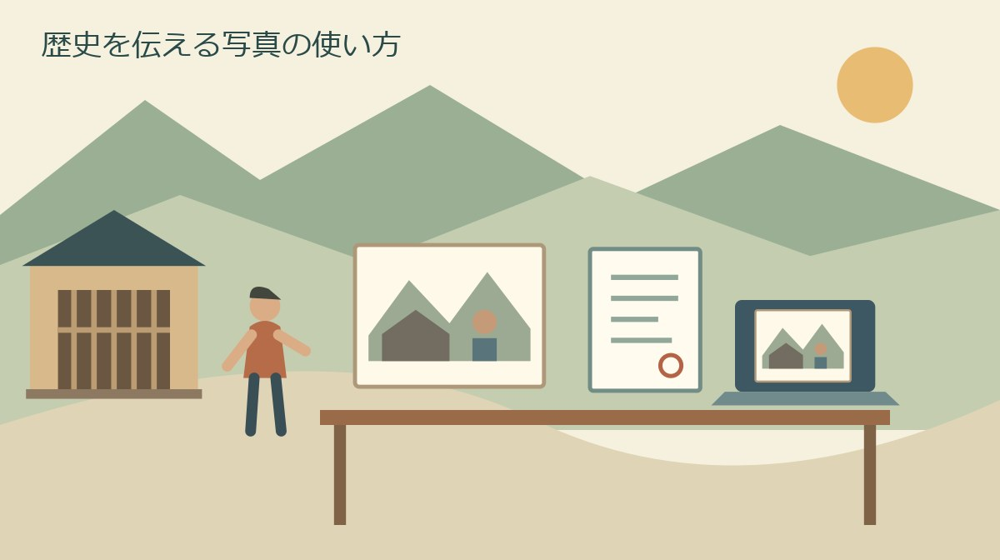
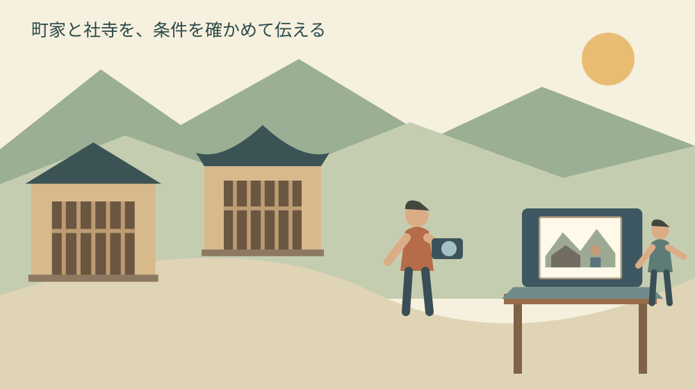
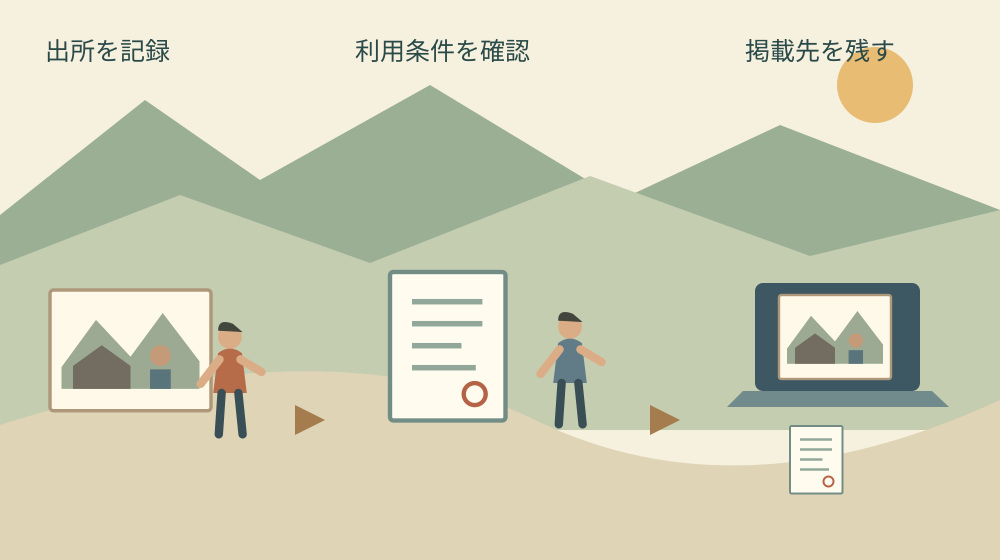

森町の歴史を写真で伝える｜観光写真の利用条件
公開｜水曜日・歴史文化の継承

Q. 森町の観光写真は、無料なら歴史紹介にそのまま使える？
A. 森町観光協会の写真館の素材は、無料でも無条件ではありません。利用案内を確認し、申請・承認後に案内された方法で使います。町オープンデータの規約や町史の所蔵者表示は別のものです。掲載先、加工の予定、出典の表示、掲載後の報告を確認し、不明点が残る写真は掲載を保留します。
歴史を見せる写真の向こうに、撮る人と守る人がいる
森町の町家や社寺の写真は、建物を守る人、撮影する人、写真を整理して提供する人の仕事に支えられています。歴史を分かりやすく紹介したいときほど、その手間を軽く扱わずに使いたい。写真がきれいだから掲載する、という判断の前に利用条件を確かめます。
私は大石浩之（磐田市／不動産業）です。町の外から地域の歴史を伝える立場として、写真の見栄えだけでなく、掲載後も説明できる記録を残したいと考えます。今回は観光協会の写真館を入口に、町オープンデータや町史の写真とは何を分けて確認するかを整理します。
無料は、無条件という意味ではありません。私は、公開予定日から逆算して、写真を選ぶ日より先に利用案内を読む時間を確保します。申請や確認が残ったまま本文だけを完成させると、公開直前に差し替えが必要になるからです。今日できるのは、候補画像の掲載元URLを一つ記録することです。
この記事に載せる絵は、内容を説明するためのオリジナル図版です。観光協会の写真を申請・ダウンロード・転載したものではありません。実在の町家や社寺の外観を証明する画像でもありません。歴史紹介で何を確認するかを、写真そのものの利用と切り離して示します。
観光協会の写真館は、申請と承認の流れがある
森町観光協会の写真館は、森町の紹介や観光PRのための写真を提供するページです。利用案内では、利用規約への同意と申請、内容確認後の承認、メールで案内されるダウンロードという流れを示しています。2026年10月28日に検索サービス経由で取得できた利用案内の本文を確認しました。同日の直接アクセスは接続がタイムアウトしました。以下は取得できた案内の整理であり、現在の受付状況や条件の変更を保証するものではありません。実際に写真を使う前に、公開元の最新案内を確認してください。
掲載後についても、写真を使った印刷物等の送付や、ブログの場合のURL連絡が案内されています。画像を受け取って終わりではなく、使った先を知らせる段取りがあるということです。本記事は案内を説明するもので、読者に代わって申請や同意を行うものではありません。
私は、この流れを予定表へ入れる際、申請日と公開日を同じ日に決めないようにします。承認までの所要日数を今回の公開本文から確認できていないためです。期限がある制作物なら、必要な時期と用途を整理し、間に合うと決め付けずに確認する余裕を持たせます。
申請用に考える内容と、記事に載せる説明文も分けます。どの媒体に、何の目的で、どの画像を使う予定かを整理したうえで、正式な申請フォームの項目を確認します。ここで挙げた準備項目は私の提案であり、実際のフォームの必須欄を代わりに列挙したものではありません。
写真を眺めている段階では、候補に番号を付け、掲載元と選んだ理由だけを記録する方法があります。第三者の写真をとりあえず保存して共同作業者へ配ることを、最初の作業にする必要はありません。案内を確認した後で、認められた手順に沿って取得と共有の範囲を決めます。
無料提供でも、目的と権利の確認は残る
写真館の利用案内は、無料での提供とともに利用目的や禁止事項を示しています。写真自体の商品性に依存する製品の製造・販売などは禁じられています。町を紹介する記事、販売用の写真商品、素材そのものの再配布を、同じ利用として扱うことはできません。
写真館の案内は、写真に含まれる肖像権等の諸権利についても注意を示しています。必要な許諾等の交渉は利用者が行うという内容です。私は、写真を提供する窓口から承認を得れば、画面の中の人や物に関する確認がすべて終わるとは考えません。
利用案内には、ダウンロード用URLを他者へ譲渡・転売しないという条件もあります。共同編集する人へ何を渡せるかが不明なら、取得したURLをそのまま共有する前に確認します。便利さを理由に条件を省くと、あとで誰が何を受け取ったかを説明しにくくなります。
加工について本記事では、切り抜き、色の変更、文字の重ね方を一律に許可済みとは扱いません。個別の編集案に対して、どこまで認められるかが未確認だからです。私は、元画像と編集後の案の違いを説明できるようにして、必要な場合に確認する方法を提案します。

町オープンデータの規約は、別の入口で読む
森町公式の「森町オープンデータ利用規約」は、町が公開するオープンデータを対象とした規約です。原則として表示4.0国際のライセンスを案内し、リソースに個別のライセンスがある場合はそれによるとしています。町のウェブサイトの写真すべてへ適用する文書ではありません。
同規約には、ライセンス表示、著作権者名、データ名の表示や、改変した場合の明示について記載があります。第三者が権利を持つ部分についても条件を示しています。町公式の資料だから自由に転載できると判断せず、対象データと適用される条件の組を確かめます。
私は、写真の候補一覧に「写真館」「町オープンデータ」「町史掲載」という出所の欄を作る方法を提案します。同じ森町の風景でも、取得元が違えば確認すべき案内が変わるためです。画像の見た目だけで同じ箱へ集めず、利用条件をたどれる整理にします。
オープンデータを使う予定なら、そのデータがどのリソースに含まれるかを先に確認します。規約PDFだけを保存しても、選んだ画像が適用対象だと証明したことにはなりません。個別ページの名称とURL、ライセンス表示、確認日を併せて記録する方法が考えられます。
町オープンデータの条件を満たした表示例を、観光協会写真館へそのまま流用することも避けます。写真館には申請と承認の流れがあるからです。「どちらも町の情報」という大きな括りより、どの案内に基づいてその写真を使うのかを説明できる方が、編集の引継ぎに役立ちます。
町史の所蔵者表示は、転載の許可証ではない
森町公式の図説森町史「33 森地域の戦争体制と人々」は、写真に森町教育委員会所蔵写真という表示を添えています。「49 森町の工芸品・書跡・古文書」には、社寺所蔵と個人所蔵の双方の表示があります。これらは資料の由来を読む手がかりです。
所蔵している人と、写真の利用を許諾する権限を持つ人が同じかどうかは、その表示だけでは確定できません。私は、所蔵者名を記事へ書けば転載の条件も満たせる、と判断しません。資料の説明と、画像を複製・掲載するための条件は、別の問いとして扱います。
町史を調べる段階では、写真を転載せず、公式ページの説明を読み、出典へリンクする方法もあります。資料の使い分けは、森町の歴史調べの記事で整理しています。画像を自分の記事へ置く必要が本当にあるかを、本文の目的から考えられます。
所蔵表記の違いを見たい方は、森町の工芸品・書跡・古文書の索引も参考になります。個人所蔵と書かれている資料について、所蔵者の住所を推測したり、連絡先を探して突然訪問したりするための一覧ではありません。
掲載ページに条件が見当たらないときは、条件が存在しないと解釈せず、公式の問い合わせ先で画像利用の確認方法を尋ねます。相談先へは、ページURL、画像の位置、予定する媒体と用途を整理して伝える方法があります。原物の所有や撮影者の権利を、利用者の推測で決めないためです。
良い点｜歴史を伝える素材へたどる道が見える
観光協会写真館の良い点は、森町を紹介する目的の素材と利用案内が、一つの入口から確認できることです。私は、町家や社寺を紹介する人が、出所の不明な画像を探し回らずに済む点を評価します。使いたい写真と申請の流れを、制作の初期に検討できます。
掲載後の連絡まで示されている点も、私はよいと考えます。使った場所を提供側が把握できれば、利用者も後から説明を求められた際に掲載先を示せます。単に承認を受ける一回の作業で終わらず、公開したページと記録を結び付けるきっかけになります。
町史の所蔵者表示やオープンデータの規約も、役割を分けて読めば助けになります。私は、それぞれが同じ条件でないことを不便と片付けません。歴史資料の由来を説明するページと、素材を提供する仕組みは目的が違います。用途に合う入口を選ぶことで、確認の問いを絞れます。
写真の表現そのものに関心がある場合は、小國神社写真展を扱った記事も読めます。ただし、展示で鑑賞できることと、作品を自分の媒体へ使えることは別です。鑑賞の機会を紹介する記事を、画像素材の配布案内として読まないようにします。
注文したい点｜確認する人の時間も予定に入れる
写真利用の準備では、掲載条件の確認と制作日程を別々に考えない方がよいと私は思います。家族や地域の小さな団体では、原稿、写真、印刷を同じ人が担うことも考えられます。確認を最後へ回すと、その一人が締切前のやり直しまで抱える段取りになってしまいます。
私が案内に望むのは、利用者が迷いやすい編集例を確かめられる入口です。たとえばウェブと印刷の併用や、公開後の用途変更が当初の承認に含まれるかは、個別に確認したい点です。本記事では未確認のまま許可済みと扱わず、問い合わせで条件をそろえるための問いとして残します。
観光PRの目的という説明を読んでも、個々の不動産広告や商品の販促が該当するかを、利用者だけで決めるのは避けます。私は、地域の紹介部分だけを切り出して説明するのでなく、実際の掲載媒体全体と利用目的を伝える方が誠実だと考えます。意図を隠さない準備です。
加工の確認も、写真の意味が変わるかという視点を持ちます。建物の一部を消したり、別の季節の風景と合成したりすれば、歴史紹介の読み手が誤解する可能性があります。私は、許諾の確認だけでなく、写真が何を示す資料なのかを説明できる編集を選びたいと思います。
私は、写真があれば伝わるという考えには迷いがあります。強い印象の画像ほど、本文の未確認部分まで本当らしく見せることがあるからです。建物の年代や公開状況は一次資料で別に確かめます。写真の存在だけを根拠に、現在も入れる、現在も同じ姿だと断定しません。

対案・結論｜素材を選ぶ前に、利用台帳を一行作る
森町の歴史を写真で伝える準備として、私は素材利用台帳を一行から作る方法を提案します。画像の掲載元URL、資料名、予定する用途、利用条件の確認日、未確認事項を書く形です。正式な申請書の代わりではなく、編集担当が条件を取り違えないための内部記録です。
次に、掲載先を具体化します。「地域紹介」だけでなく、ウェブ記事なのか、紙の冊子なのか、掲示用のポスターなのかを書きます。複数の媒体で使う予定なら、一つの申請で全部扱えると推測しないでください。利用案内や担当先で対象範囲を確認するための材料にします。
画像の役割も一文にします。建物の全景を見せるのか、街道と町家の関係を伝えるのか、祭礼の場面を説明するのか。役割が決まれば、写真が未確認のままでも、文章や自作の概念図で目的を満たせるかを考えられます。素材に合わせて記事の事実を変える必要はありません。
利用条件がそろうまでは、公開画面に第三者の画像を仮置きしない方法を勧めます。仮のつもりでも、公開すれば読者が見る状態になるためです。公開日が迫っているなら、確認できた素材だけで構成するか、写真を使う部分の公開を待つ。確認が終わっていないことを編集の予定へ反映します。
掲載後の連絡と、次の担当への引継ぎを残す
写真を使って公開した後は、掲載URLや発行物、条件に沿った報告の記録を、取得時の案内と組にして残します。私は、承認メールだけ保存しても、どの記事に使ったかが不明では引継ぎが難しいと考えます。画像の番号と掲載先を対応させると、後の修正にも使えます。
担当者が交代する際は、画像ファイルだけを渡すのではなく、利用した条件と未確認事項を渡します。次の人が別の記事へ再利用したい場合も、前の承認がその用途に及ぶと推測しないようにします。確認が必要なときに、元の案内と掲載履歴へ戻れる状態を目指します。
写真の削除や差替えが必要になったときは、本文だけでなく、記事の表紙やSNS表示用の画像にも使っていないかを確かめます。これは私の編集上の点検提案です。同じ素材をどこへ置いたかの記録があれば、修正する場所を探す作業を減らし、対応漏れを防ぐ助けになります。
家族や団体の記録では、権利確認をした人がいつまでも担当するとは限りません。引継ぎのために、確認した日、案内の名称、使った範囲を短く残します。今日できる小さな一歩は、候補画像一枚について出所の欄を埋めることです。調べた人の記憶だけに頼らない仕組みになります。
大石の視点｜説明できる写真を、必要な分だけ使う
私はこう考えます。町家を紹介する原稿を机で組む場面なら、写真を何枚入れるかより先に、一枚で何を伝えたいかを書きます。これは過去の相談や撮影体験の再現ではなく、私の編集上の提案です。街道との位置関係を伝えるなら概念図が向く場合もあるし、実際の外観を伝えるなら、その写真の時期と利用条件を確かめる必要があります。目的を先に決めれば、無理に写真を増やす負担も減らせます。
歴史を伝える仕事は、建物を守る人への敬意と、素材を使う側の段取りで支えられます。私は、使えるか分からない写真を先に載せるより、説明できる一枚を選びます。掲載元と条件を残し、確認が済んだ範囲で公開する。その小さな積み重ねを、森町の文化を次の読み手へ渡す方法にしたいと思います。
よくある質問
2026年10月28日に確認した一次資料と、本記事の準備方法から、家族や次の担当者が迷いやすい点を整理します。
森町観光協会の写真は無料ならすぐブログに使えますか？
無料でも無条件の利用ではありません。写真館の利用案内には、規約への同意、申請、内容確認後の承認、案内されたURLからの取得という流れがあります。ブログ等で使った後の掲載先の連絡も示されています。用途や加工、第三者の権利に未確認の点があれば、掲載前に確認してください。本記事では写真の申請や転載は行っていません。
森町公式サイトの写真は全部オープンデータですか？
町公式サイトにあることだけで、すべての写真をオープンデータと判断することはできません。森町オープンデータ利用規約の対象となるデータか、個別のライセンスがあるかを確認します。観光協会の写真館の利用案内は別の仕組みです。画像の掲載元URLと適用される条件を組にして記録し、出典表示や改変の表示も確認してください。
町史の写真は所蔵者名を書けば転載できますか？
所蔵者名は資料の由来を知る手がかりですが、その表示だけで写真の転載許可を得たことにはなりません。利用案内や権利関係を別に確認してください。不明な場合は、掲載ページと画像の位置、予定する用途を整理して公式の問い合わせ先へ確認します。画像を転載せず、公式ページへのリンクと自分の説明で歴史を紹介する方法も検討できます。
公式情報源
2026年10月確認（確認日：2026年10月28日）。制度・数値・利用条件は変わる場合があります。最新条件は担当先へ、保存修復・権利・税務・登記・相続等の個別判断は専門家へ確認してください。
- 森町観光協会：写真館・利用案内（2026年10月28日確認）
- 森町：森町オープンデータ利用規約（2026年10月28日確認）
- 森町・図説森町史：33 森地域の戦争体制と人々（2026年10月28日確認）
- 森町・図説森町史：49 森町の工芸品・書跡・古文書（2026年10月28日確認）